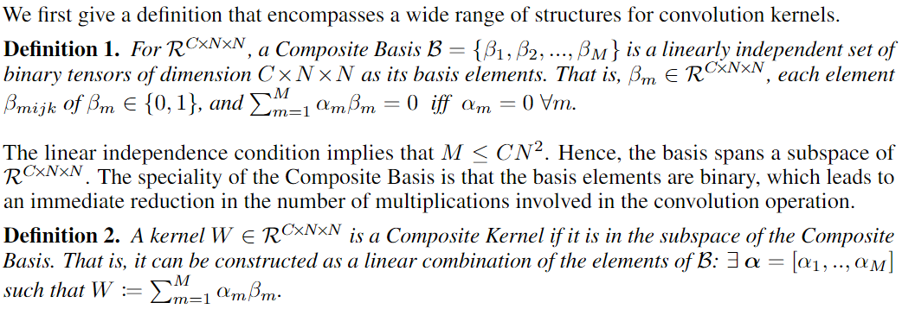
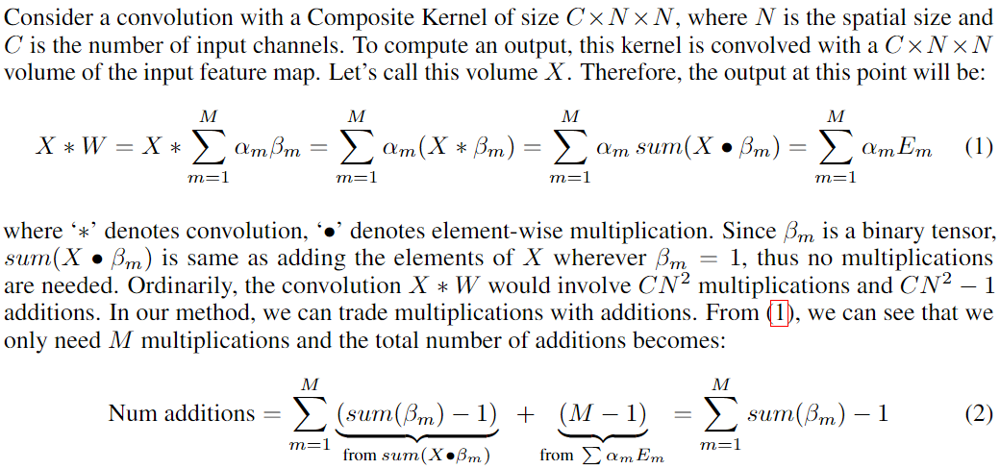
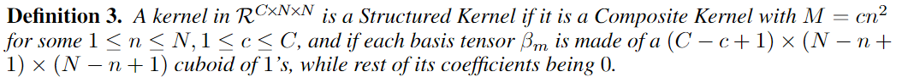
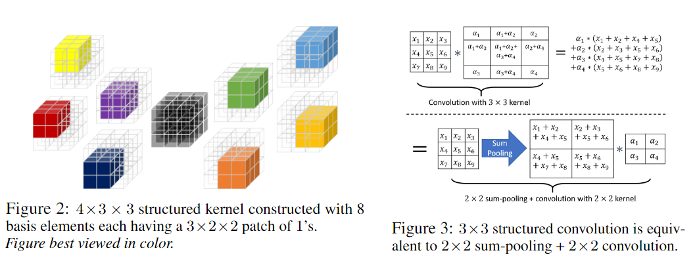
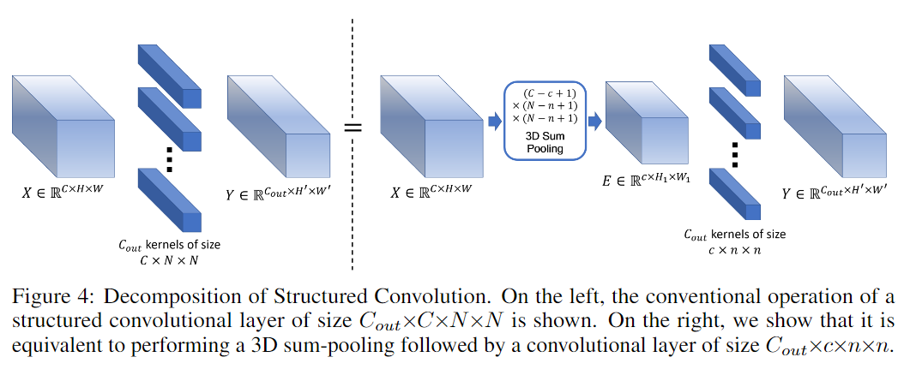
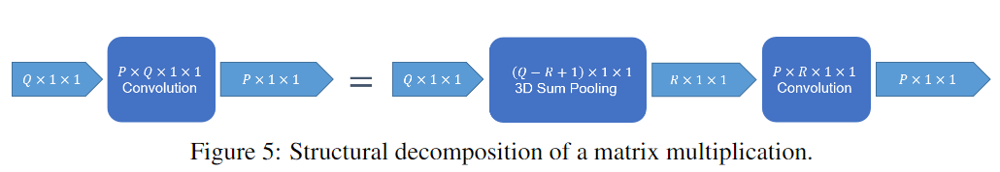

把卷积分解成sum-pooling和更小的卷积

论文：Structured Convolutions for Efficient Neural Network Design
作者：Yash Bhalgat, Yizhe Zhang, Jamie Menjay Lin, Fatih Porikli
一作单位：Qualcomm AI Research
录用情况：Neurips'2020
本文提出了一种Structured Convolution，将传统的卷积运算分解为sum pooling操作和卷积核更小的卷积操作，从而能够获得更小、更快的推理模型；为了使得分解带来的损失更小，作者还设计了一种Structural Regularization的正则项添加到训练过程中。该方法不亚于先前的各种张量分解或者通道剪枝方法。笔者认为，本文的分解方法很有意思。
方法
Composite Kernels
模型压缩的方法都基于这样一条假设，神经网络都是过参数化的(over-parameterized)。本文主要关注的是卷积核的冗余性。首先，作者定义了卷积核的二元基（命名为Composite Basis）以及这些基的线性组合得到的卷积核（命名为Composite Kernels）。
原文中的定义如下： 
到目前为止，从原来的 \(C\times N^2\) 的一个卷积核，变成了 \(M\times C\times N^2\) 的一组二值基和 \(M\) 个权重；
作者带着我们回忆了一下线性代数知识，\(M\)个线性无关的基张成维度为\(M\)的子空间，其中每个张量的长度是\(CN^2\)，因此在\(M<CN^2\)的条件下，这个子空间中的Composite Kernels相比于任意的Kernels是降维的版本；
笔者看到这里时有两个后来证明是没什么关联的联想：
基的binary属性让我一开始想到量化和二值网络，实际上应该只是为了得到类似标准正交基，容易地拥有线性无关属性；
还会联想到矩阵分解，在\(M\)组分解方向中选出重要的方向，但是本文不是这样；与矩阵分解的核心区别是，矩阵分解得到的基和坐标都是“学得”的（不管是用SVD还是什么方法），而这里的基是固定的；
将这种对卷积核的分解带入卷积运算中，带来的收益是乘法运算次数的减少：

这里用到了卷积的可加性，并且，利用 \(\beta_m\) 的二值化特征，其与\(X\)的逐点乘法转化成了仅在 \(\beta_m = 1\) 位置的加法（后文结合 \(\beta_m\) 的构造我们才能知道具体如何实现）；这样一来，将原来卷积需要的\(CN^2\)次乘法和\(CN^2-1\)次加法变成了 \(\sum_{m=1}^{M}\mathrm{sum}(\beta_m)-1\) 次加法；
论文的图一（本文文首图）展示了几种不同自由度的 \(\beta_m\) 的构造方式（图中带上了权重），至此，加法的次数相较于原来还是有可能增加的；
Structured Convolutions
作者提出了一种structured kernel的构造基的方式，定义和图示如下：


图1(b)展示了一种2D structured kernel的构造；图2展示了一种3D structured kernel的构造；图3以2D为例说明了为什么要用这样的构造；
在这种构造方式下，我们不需要再利用卷积的可加性拆成与每个基的卷积后再求和，因为这些基的和与\(X\)的卷积输出很有特点，正如先对\(X\)进行sum-pooling, 再与一个小卷积核做卷积一样，且这个小卷积核正是有所有的权重向量组成；
考虑多个卷积核的情况，容易发现，sum-pooling的结果是可以被各个卷积核复用的，这也是相比传统卷积能够减少加法次数的关键；

在4.2节，作者分析了使用sum-pooling + structured convolution相比于传统卷积在加法次数以及乘法次数上的提升比例，经分析（详见原文），作者使用 \(CN^2/cn^2\) 作为卷积层的近似压缩比；
由于线性操作可以视为1*1的卷积，因此，上述压缩方式又可以扩展到线性层上，如图5所示：

分解卷积核
被分解的卷积核 \(W = \sum_{m}\alpha_m\beta_m\)，定义矩阵 \(A\in \mathbb{R}^{CN^2\times cn^2}\)，其第 \(i\) 列都是基 \(\beta_i\) 的展开(vectorized)，定义 \(\boldsymbol{\alpha} = [\alpha_1,\dots, \alpha_{cn^2}]\)，有： \[ \mathrm{vectorized}(W) = A \cdot \boldsymbol{\alpha} \]
我们需要表示出在structured kernel下，\(A\) 的形式；
\((C-c+1)\times(N-n+1)\times(N-n+1)\) 的sum-pooling可以视为同等大小的全为1的卷积核，因此structured convolution可以表示为： \[ X * W = X * \mathbf{1}_{(C-c+1)\times(N-n+1)\times(N-n+1)} * \boldsymbol{\alpha}_{c\times n\times n} \]
因此有 \[ W = \mathbf{1}_{(C-c+1)\times(N-n+1)\times(N-n+1)} * \boldsymbol{\alpha}_{c\times n\times n} \]
使用im2col的方法，在步长为1的条件下可以视为把输入表示成Topelitz矩阵，有： \[ \mathrm{vectorized}(W) = \mathrm{Topelitz}(\mathbf{1}_{(C-c+1)\times(N-n+1)\times(N-n+1)}) \cdot \mathrm{vectorized}(\boldsymbol{\alpha}_{c\times n\times n}) \]
因此，我们得到 \[ A = \mathrm{Topelitz}(\mathbf{1}_{(C-c+1)\times(N-n+1)\times(N-n+1)}) \]
在 \(A\) 和 \(W\) 已知的情况下，如何求解出 \(\alpha\)？ \[ \alpha = A^+W \] 其中，\(A^+\) 是 \(A\) 的伪逆；这样，我们可以把对\(W\)的分解写成 \(W = A\alpha = AA^+W\)，为了使得这种分解造成的性能损失更小，在训练时引入正则项： \[ \lambda\sum_{l=1}^L\frac{\|(I-A_lA_l^+)W_l\|_F}{\|W_l\|_F} \]
相比于直接使用structured convolution结构训练，这种带正则项训练，完成训练后分解的方式性能更好，因为正则项使得权重是从 \(\mathbb{R}^{C\times N\times N}\) 渐进地压缩到 \(\mathbb{R}^{c\times n\times n}\) 中的；
实验
在正文部分作者报告了ImageNet、CIFAR-10上的分类性能和CityScape上的分割性能，都是将常见的轻量级模型添加正则项后训练再分解得到的，并给出了保持性能版本(A)和尽力压缩版本(B)，详见原文；
总结
基于固定的基(prefixed basis)的分解方法先前已经有很多，笔者认为本文出彩之处就在于structured kernel的构造基的方式，使得运算被简化成sum-pooling和更小的卷积；这种分解对于训练好的模型来说，是数据无关的；这种分解的另一个好处是，分解后算子仍然可以用传统算子完成，这意味着可以集成更多的模型压缩方法。